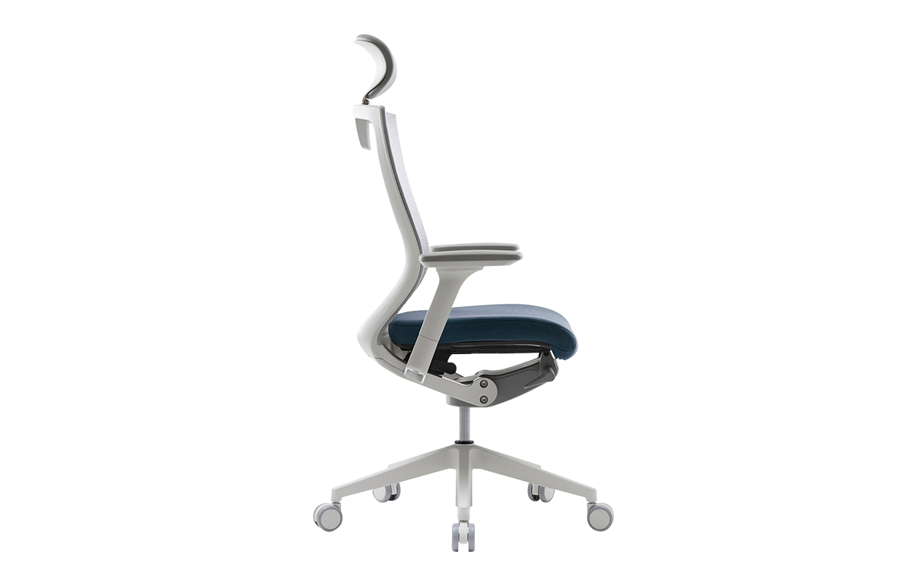
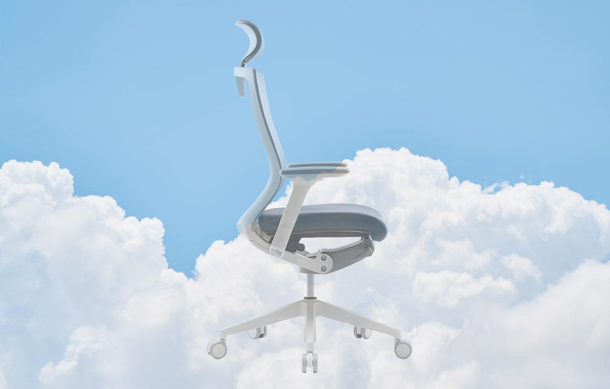
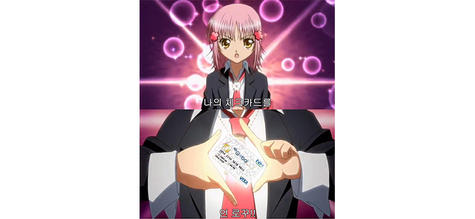

이 핑크색 의자는 무려 초등학생때부터 나와 함께한 의자인데,
10여년의 기간동안 아무런 문제 없이 내 삶의 무게를 함께 지탱해 온 동반자다.
그런데 보다시피 이 의자엔 헤드레스트가 없다.
어릴 땐 불편한지 몰랐는데 머리 좀 컸다고 이젠 불편하다.
불편하면 자세를 고쳐 앉으라지만
고쳐 앉아도 불편하다면 의자를 바꿔야 하는 게 아닐까.
의자는 직접 앉아보고 사야 한다는 친구의 조언을 듣고 아래 두 브랜드의 매장을 가보기로 했다.
광고를 하도 멋지게 잘 만들어놓은데다가, 주변 사람들도 시디즈 의자를 극찬하길래 꼭 가봐야겠다 싶었다.
로고에서부터 의자에 과몰입한 브랜드인게 느껴진다.
‘대체 얼마나 좋은지 한번 보자고’
앞에서 소개한 나의 10년 동반자를 만든 브랜드다.
그 친구는 비록 헤드레스트가 없다는 태생적 결함이 있지만 10년동안 잔고장도 없이 굳건하게 날 지지해줬기에,
나는 듀오백에게 묘한 신뢰를 가지게 되었다.
‘10년이 지났으니 훨씬 더 좋은 의자가 나왔겠지? 어쩌면 시디즈보다 좋을지도!’
시디즈를 먼저 가서 사장님이 자신있게 추천하신 T50 모델에 앉아보게 되었다.
 하지만 21세기 정보의 홍수 속에서 최대한 현명한 소비를 해야 하는 일개 대학생 이산하는 듀오백도 마저 보고 오기로 결심한다
광활한 백화점 안에서 ‘real comfort’라고 적혀있어서, 저게 듀오백일거라 생각 못하고 몇바퀴 돌았다
찾아보니 듀오백에서 만든 헬스케어 브랜드라고 한다
우여곡절 끝에 들어가서 일단 시디즈랑 비슷하게 생긴 의자를 골라 이것저것 앉아봤다
comfort 하지 않았다
아까의 무릉도원이 보이지 않았다
난 이제까지 모르는게 약이라는 말을 잘 공감 못했다
하지만 역시 옛말은 틀린게 없다
듀오백을 가지 않았다면 나는 십년간 함께한 의자로부터 비롯된 신뢰를 잃지 않았을텐데
직원분이 내 후드티 정보를 물으시길래 알려드리고 나왔다
자 이제 누가 영업맨이지
집으로 돌아온 나는 시디즈 의자를 사야겠다고 마음을 먹었다
그대로 언로꾸 하려 했는데
일단 새 의자를 사려면 부모님의 허락을 받아야 했는데 엄마는 사라 하셨지만 아빠는 듀오백 의자에 대한 무한한 신뢰를 가지고 있었기에 그 멀쩡한걸 왜 버리냐고 반대를 하셨고 갑자기 데스크탑을 사느라 거금을 지출해서 지갑이 한없이 가벼워졌고 학교에서 20만원을 거저 준다기에 냅다 신청한 진로 설계 장학금은 들어올 기미가 보이지 않았고 마침 또 개강 직전에 제주 여행을 갔다와서 지갑은 가벼워지다 못해 거의 투명해졌고 진로설계 장학금은 여전히 들어오지 않고 있었고 때마침 지구에 외계인이 침공해서 지하벙커로 대피했고 그런데 출입구가 덜닫겨서 외계바이러스가 침투했고 개강은 다가오는데 외계인때문에 밖으로 나갈수가 없고
이러쿵 저러쿵 한 사정으로
못했다.
그러던 어느 날,
기다리고 기다리던 진로설계 장학금이 들어왔고
이게 웬걸
특별지원장학금이라는 것도 갑자기 들어왔다
난 일시적으로 두둑해진 지갑에 묘한 자신감을 얻어 그날 저녁 아빠에게 다시 한 번 시디즈 의자 구매에 대한 허락을 구했다
아빠는 딸이 평소에도 목이 아프다는 말을 자주 했는데 이러다 거북이가 되어 바다로 사라져버릴까봐 걱정되었는지 드디어 허락을 내렸다
그래서 다음날 날이 밝자마자 지난번에 갔던 시디즈 매장의 사장님께 전화를 걸었다
그리고, 시디즈 의자를, 주문했다. 드디어.
그런데 비슷한 시기에 의자를 주문했던 선배의 지인은 택배파업 때문에 2주 가량이 지나서야 의자를 받았다고 했다
막 거금을 결제할 생각에 잔뜩 신나있던 나는
라고 떠들었다
그 선배는 조언은 물론 야무지게 조롱까지 해줬다
그래서 아무튼 아직까지도 나는 의자를 받지 못했다
혹시나 학교에서 거북이 한 마리를 마주친다면 어서 시디즈 의자가 배송오길 바라며 기도들 한번씩 해주시길 바란다